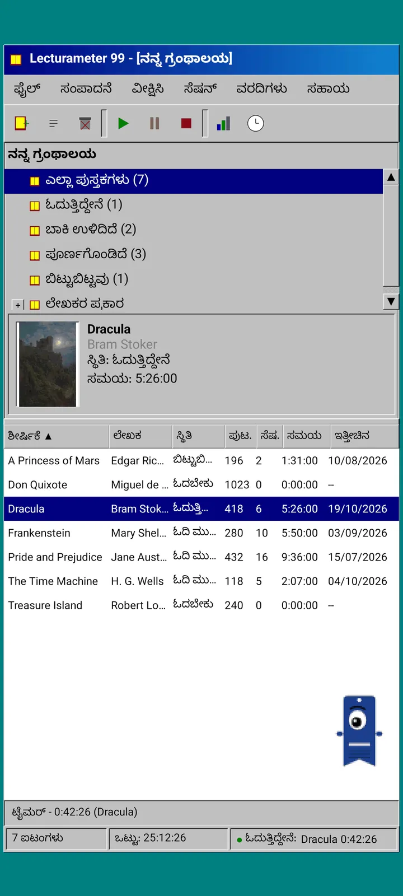
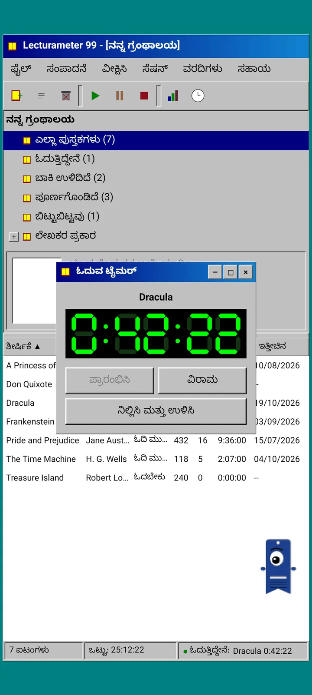
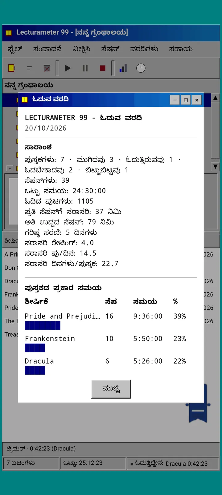
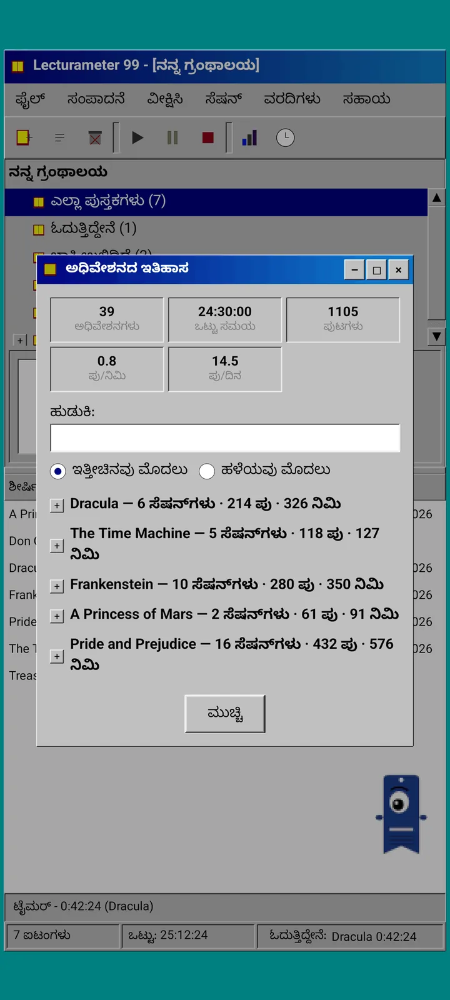
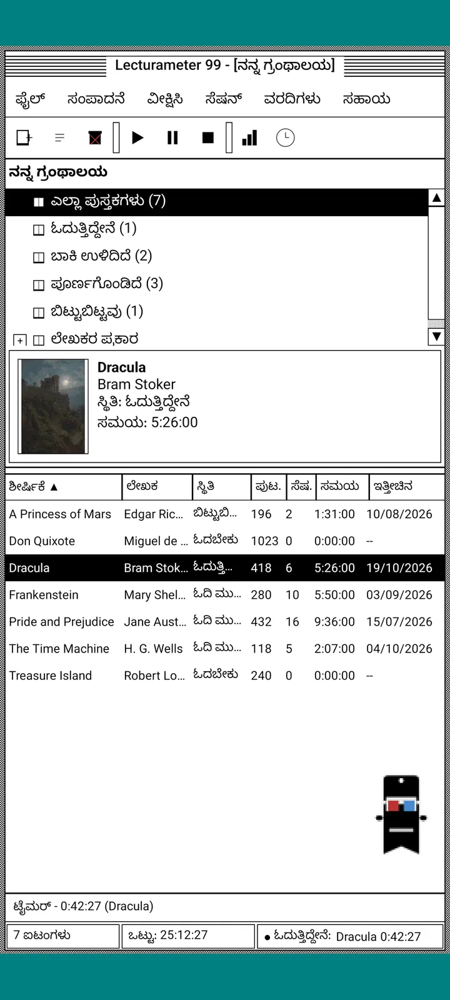
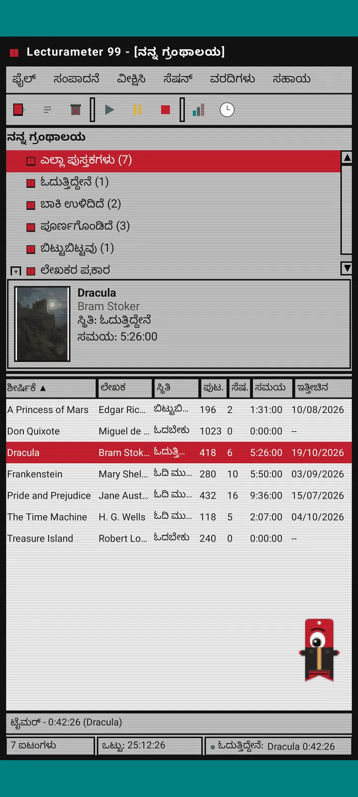
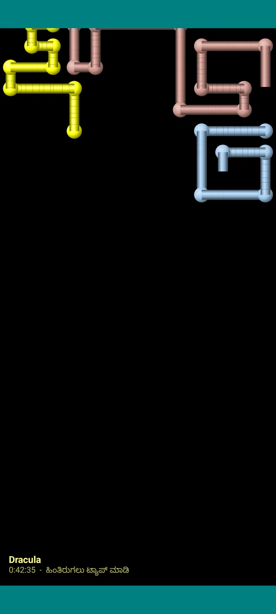

Lecturameter 1999
1999 ರಲ್ಲಿ CD-ROM ನಿಂದ ಇನ್ಸ್ಟಾಲ್ ಮಾಡಿದಂತೆ Lecturameter. ವಿಂಡೋಗಳು, ಮೆನುಗಳು ಮತ್ತು ಕೋಷ್ಟಕಗಳಿರುವ, ನಿಮ್ಮ ನಿಜವಾದ ಬ್ಯಾಕಪ್ಗಳನ್ನು ತೆರೆಯುವ ಆ್ಯಪ್ನ ಪರ್ಯಾಯ ಕ್ಲೈಂಟ್.

ಇದು ಏನು
ತೊಂಬತ್ತರ ದಶಕದ ಕೊನೆಯ ಡೆಸ್ಕ್ಟಾಪ್ ಪ್ರೋಗ್ರಾಂ ನಿಮ್ಮ ಫೋನ್ನಲ್ಲಿ ಓಡುತ್ತಿದೆ. ಟೀಲ್ ಬಣ್ಣದ ಡೆಸ್ಕ್ಟಾಪ್ ಮೇಲೆ ಒಂದು ವಿಂಡೋ, ಮೆನು ಬಾರ್, ಟೂಲ್ಬಾರ್, ಫೋಲ್ಡರ್ ಟ್ರೀ, ದಟ್ಟವಾದ ಕೋಷ್ಟಕ ಮತ್ತು ಸ್ಥಿತಿ ಪಟ್ಟಿ.
- ಲೈಬ್ರರಿ ಟ್ರೀ: ಎಲ್ಲಾ ಪುಸ್ತಕಗಳು, ಓದುತ್ತಿರುವುದು, ಬಾಕಿ, ಪೂರ್ಣಗೊಂಡಿದ್ದು, ಬಿಟ್ಟಿದ್ದು ಮತ್ತು ಲೇಖಕರ ಪ್ರಕಾರ
- ಶೀರ್ಷಿಕೆ, ಲೇಖಕ, ಸ್ಥಿತಿ, ಪುಟಗಳು, ಅಧಿವೇಶನಗಳು, ಸಮಯ ಮತ್ತು ಕೊನೆಯ ಓದು ಇರುವ ಕೋಷ್ಟಕ. ವಿಂಗಡಿಸಲು ಕಾಲಮ್ ಹೆಡರ್ ಅನ್ನು ಒತ್ತಿ
- Lecturameter ಬಳಸುವ ಅದೇ ಕ್ಯಾಟಲಾಗ್ನೊಂದಿಗೆ ನಿಜವಾದ ಪುಸ್ತಕ ಹುಡುಕಾಟ
- Lecturameter ಬ್ಯಾಕಪ್ ಮತ್ತು Goodreads CSV ಅನ್ನು ಆಮದು ಮತ್ತು ರಫ್ತು ಮಾಡುತ್ತದೆ. ನಿಮ್ಮ ಡೇಟಾ ಏನನ್ನೂ ಕಳೆದುಕೊಳ್ಳದೆ ಒಳಗೆ ಹೊರಗೆ ಹೋಗುತ್ತದೆ

ಇದು ಏಕೆ ಇದೆ
ಒಂದು ಪ್ರಯೋಗ: ನಿಜವಾದ ಆ್ಯಪ್ ಅನ್ನು ಮುಟ್ಟದೆ, ಸಂಪೂರ್ಣ ಭಿನ್ನ ವಿನ್ಯಾಸ ತತ್ವಗಳ ಅಡಿಯಲ್ಲಿ Lecturameter ನ ಕಲ್ಪನೆಯನ್ನು ಮೊದಲಿನಿಂದ ಮರುನಿರ್ಮಿಸುವುದು. ಎಲ್ಲಾ ಮರುವ್ಯಾಖ್ಯಾನಗಳಲ್ಲಿ 1999 ರದ್ದು ನನಗೆ ಹೆಚ್ಚು ಇಷ್ಟವಾಯಿತು, ಹಾಗಾಗಿ ಅದನ್ನು ಮೋಜಿನ ಅಭ್ಯಾಸವಾಗಿ ಪೂರ್ಣಗೊಳಿಸಿ ಸಂಪೂರ್ಣ ಕ್ಲೈಂಟ್ ಆಗಿ ಮಾಡಿದೆ. ಇದು ಉದ್ದೇಶಪೂರ್ವಕವಾಗಿ Lecturameter ಗಿಂತ ಸರಳ: ಇದು ಒಂದು ಪ್ರಯೋಗ, ಮತ್ತು ಸಾಮಾನ್ಯವಾಗಿ ಇದಕ್ಕೆ ಹೆಚ್ಚಿನ ಅಭಿವೃದ್ಧಿ ಇರುವುದಿಲ್ಲ.
- ಹಸಿರು LCD ಡಿಸ್ಪ್ಲೇ ಇರುವ ತೇಲುವ ವಿಂಡೋದಲ್ಲಿ ಟೈಮರ್. ಇದು ಚಲಿಸುತ್ತದೆ, ಟಾಸ್ಕ್ಬಾರ್ಗೆ ಚಿಕ್ಕದಾಗುತ್ತದೆ ಮತ್ತು ಸ್ಥಿತಿ ಪಟ್ಟಿಯಲ್ಲಿ ಎಣಿಕೆ ಮುಂದುವರಿಸುತ್ತದೆ
- ನಿಲ್ಲಿಸಿದಾಗ, ಅಧಿವೇಶನ ಉಳಿಸುವ ಸಂವಾದ ನಿಮ್ಮ ಪುಟಗಳನ್ನು ಕೇಳಿ ನಿಮ್ಮ ವೇಗವನ್ನು ಲೆಕ್ಕಹಾಕುತ್ತದೆ, Lecturameter ನಲ್ಲಿ ಇದ್ದಂತೆಯೇ
- ಉಳಿಸಿದ ಅಧಿವೇಶನಗಳು Lecturameter ಅಧಿವೇಶನಗಳೇ: Lecturameter 1999 ಬ್ಯಾಕಪ್ ಅನ್ನು ರಫ್ತು ಮಾಡಿ Lecturameter ನಲ್ಲಿ ಆಮದು ಮಾಡಿದರೆ ಅವು ಆಧುನಿಕ ಆ್ಯಪ್ಗೆ ಮರಳುತ್ತವೆ.

ಓದುವ ವರದಿ
ಅಂಕಿಅಂಶಗಳು ಮುದ್ರಿತ ವರದಿಯಂತಿವೆ: ಸಾರಾಂಶ, ಬ್ಲಾಕ್ ಬಾರ್ಗಳೊಂದಿಗೆ ಪ್ರತಿ ಪುಸ್ತಕದ ಸಮಯ, ದಿನಕ್ಕೆ ಪುಟಗಳ ವೇಗ, ಅಕ್ಷರಗಳಲ್ಲಿ ಬರೆದ ವರ್ಷದ ಕ್ಯಾಲೆಂಡರ್ ಮತ್ತು ಕೊನೆಯ ಏಳು ದಿನಗಳು.

ಅಧಿವೇಶನ ಇತಿಹಾಸ
ಅಧಿವೇಶನಗಳನ್ನು ಪ್ಲಸ್ ಮತ್ತು ಮೈನಸ್ ಇರುವ ಟ್ರೀಯಲ್ಲಿ ಪುಸ್ತಕದ ಪ್ರಕಾರ ಗುಂಪುಮಾಡಲಾಗಿದೆ; ಮೇಲ್ಭಾಗದಲ್ಲಿ ಐದು ಅಂಕಿಗಳು: ಅಧಿವೇಶನಗಳು, ಒಟ್ಟು ಸಮಯ, ಪುಟಗಳು, ನಿಮಿಷಕ್ಕೆ ಪುಟಗಳು ಮತ್ತು ದಿನಕ್ಕೆ ಪುಟಗಳು.

ಅಧಿವೇಶನ ಉಳಿಸಿ
ದಿನಾಂಕ, ನಿಮಿಷಗಳು, ಮೊದಲ ಮತ್ತು ಕೊನೆಯ ಪುಟ, ಕಾಮೆಂಟ್. ನೀವು ಟೈಪ್ ಮಾಡುವಾಗಲೇ ಸಾರಾಂಶ ಪುಟಗಳು ಮತ್ತು ವೇಗವನ್ನು ಲೆಕ್ಕಹಾಕುತ್ತದೆ. ಕೊನೆಯ ಪುಟ ತಲುಪಿದರೆ, ಪುಸ್ತಕ ಮುಗಿಸಿದಿರಾ ಎಂದು ಕೇಳುತ್ತದೆ.

Pagi 99
ಪಾಗಿ ಕೂಡ 1999 ಕ್ಕೆ ಪ್ರಯಾಣಿಸುತ್ತದೆ: ಆ ಕಾಲದ ಆಫೀಸ್ ಸಹಾಯಕರಂತೆ ಪಿಕ್ಸೆಲ್ ರೂಪದಲ್ಲಿ ಪರದೆಯ ಮೇಲೆ ಸ್ವತಂತ್ರವಾಗಿ ಇರುತ್ತದೆ. ಅದನ್ನು ಎಳೆಯಬಹುದು, ಒತ್ತಿದಾಗ ಒಂದು ಮಾತು ಹೇಳುತ್ತದೆ ಮತ್ತು ಹಳದಿ ಬಲೂನ್ಗಳಲ್ಲಿ ಟಿಪ್ಸ್ ತೋರಿಸುತ್ತದೆ.
ಥೀಮ್ಗಳು
Classic 98 ಉಚಿತ ಮತ್ತು ಡೀಫಾಲ್ಟ್. ಪ್ಯಾಕ್ ಇನ್ನೂ ಆರು ಸೇರಿಸುತ್ತದೆ; ಪ್ರತಿಯೊಂದಕ್ಕೂ ತನ್ನದೇ ಹಿನ್ನೆಲೆ ಮತ್ತು ಶಬ್ದಗಳಿವೆ.

ನೋಟ ಮೆನುವಿನಿಂದ ಆರಿಸಿ
ನೋಟ, ಥೀಮ್... ಏಳು ಥೀಮ್ಗಳಿರುವ ವಿಂಡೋ ತೆರೆಯುತ್ತದೆ. ಬದಲಾವಣೆ ಎಲ್ಲಾ ವಿಂಡೋಗಳಿಗೆ, ಟೈಮರ್ಗೆ ಮತ್ತು ಪಾಗಿಗೆ ಒಮ್ಮೆಲೇ ತಲುಪುತ್ತದೆ.
- Classic 98, ಉಚಿತ ಮತ್ತು ಡೀಫಾಲ್ಟ್: ಬೂದು ವಿಂಡೋಗಳು, ನೇವಿ ಶೀರ್ಷಿಕೆ ಪಟ್ಟಿಗಳು ಮತ್ತು ಟೀಲ್ ಡೆಸ್ಕ್ಟಾಪ್
- ಥೀಮ್ ಪ್ಯಾಕ್: 1984, Gumdrop, Memory, Towers, Core ಮತ್ತು 8-bit
- ಪ್ರತಿ ಥೀಮ್ ತನ್ನದೇ ಡೆಸ್ಕ್ಟಾಪ್ ಹಿನ್ನೆಲೆ ಮತ್ತು ಟ್ಯಾಪ್ಗಳು, ವಿಂಡೋಗಳು ಹಾಗೂ ಟೈಮರ್ಗೆ ತನ್ನದೇ ಶಬ್ದಗಳನ್ನು ತರುತ್ತದೆ
- ನೀವು ಮೌನವಾಗಿ ಓದುವುದಾದರೆ, ನೋಟ, ಥೀಮ್ ಶಬ್ದಗಳು ಶಬ್ದಗಳನ್ನು ಆಫ್ ಮಾಡುತ್ತದೆ

Classic 98
ಬೂದು ವಿಂಡೋಗಳು, ನೇವಿ ಶೀರ್ಷಿಕೆ ಪಟ್ಟಿಗಳು ಮತ್ತು ಟೀಲ್ ಡೆಸ್ಕ್ಟಾಪ್. ಉಚಿತ; ಆ್ಯಪ್ ಇದರೊಂದಿಗೆ ತೆರೆಯುತ್ತದೆ.

1984
ಚುಕ್ಕೆ ಮಾದರಿಗಳು ಮತ್ತು ಚೌಕಾಕಾರದ ವಿಂಡೋಗಳಿರುವ ಒಂದು-ಬಿಟ್ ಕಪ್ಪು-ಬಿಳುಪು ಡೆಸ್ಕ್ಟಾಪ್.

Gumdrop
ಪಾರದರ್ಶಕ ಬಣ್ಣದ ಪ್ಲಾಸ್ಟಿಕ್, ದುಂಡಗಿನ ಬಟನ್ಗಳು ಮತ್ತು ಹಿನ್ನೆಲೆಯಲ್ಲಿ ಪಟ್ಟೆಗಳು.

Memory
ತೊಂಬತ್ತರ ದಶಕದ ಡಿಸ್ಕ್ ಕನ್ಸೋಲ್ನ ಮೆನುಗಳು, ಗಾಢ ನೀಲಿ ಛಾಯೆಗಳಲ್ಲಿ.

Towers
ತೊಂಬತ್ತರ ದಶಕದ ಇನ್ನೊಂದು ಡಿಸ್ಕ್ ಕನ್ಸೋಲ್, ತಿಳಿ ನೀಲಿ ಗೆರೆಗಳೊಂದಿಗೆ ಇರುಳ ನೀಲಿ.

Core
ಕಪ್ಪು ಮತ್ತು ಹಸಿರು ಕನ್ಸೋಲ್, ಎಂದಿಗೂ ಆಫ್ ಆಗದ ಪರದೆಯಂತೆ.

8-bit
ದಪ್ಪ ಪಿಕ್ಸೆಲ್ಗಳು, ಕಡಿಮೆ ಬಣ್ಣಗಳು ಮತ್ತು ಬ್ಲಾಕ್ ಅಕ್ಷರಗಳು.

ಪಾವತಿಸುವ ಮೊದಲು ಪ್ರಯತ್ನಿಸಿ
ಲಾಕ್ ಆದ ಥೀಮ್ ಅನ್ನು ಒತ್ತಿದರೆ ಇಡೀ ಆ್ಯಪ್ ಅದಕ್ಕೆ ಬದಲಾಗುತ್ತದೆ. ಖರೀದಿಸದೆ ಮುಚ್ಚಿದರೆ ಹಿಂದಿನ ಥೀಮ್ ಮರಳುತ್ತದೆ.
ಸ್ಕ್ರೀನ್ಸೇವರ್ಗಳು
ಟೈಮರ್ ಓಡುತ್ತಿರುವಾಗ ಮತ್ತು ನೀವು ಫೋನ್ ಮುಟ್ಟದಿದ್ದಾಗ ಮಾತ್ರ ಇವು ಕಾಣಿಸುತ್ತವೆ. 1, 3 ಅಥವಾ 5 ನಿಮಿಷ ಕಾಯುತ್ತವೆ, ಅಥವಾ ಎಂದಿಗೂ ಇಲ್ಲ. ಒಂದು ಟ್ಯಾಪ್ ನಿಮ್ಮನ್ನು ಹಿಂದಕ್ಕೆ ಕರೆತರುತ್ತದೆ ಮತ್ತು ಟೈಮರ್ ಎಣಿಕೆ ಮುಂದುವರಿಸುತ್ತದೆ.

ಹಾರುವ ಪುಸ್ತಕಗಳು
ಕಪ್ಪು ಪರದೆಯ ಮೇಲೆ ಹೊದಿಕೆಗಳನ್ನು ಬಡಿಯುತ್ತಾ ಹಾರುವ ಪಿಕ್ಸೆಲ್ ಪುಸ್ತಕಗಳು.

ಅಕ್ಷರ ಕ್ಷೇತ್ರ
ನಕ್ಷತ್ರ ಕ್ಷೇತ್ರದಂತೆ, ಅನೇಕ ಲಿಪಿಗಳ ಅಕ್ಷರಗಳು ತೇಲುತ್ತಾ ಸಾಗುತ್ತವೆ.

ಪುಟ ಪೈಪ್ಗಳು
ಪರದೆ ತುಂಬುವವರೆಗೆ ತಾವಾಗಿಯೇ ಚಿತ್ರಿಸಿಕೊಳ್ಳುವ ಪುಟಗಳಿಂದ ಮಾಡಿದ ಪೈಪ್ಗಳು.

ಪುಟಿಯುವ ಪಾಗಿ
ಪರದೆಯ ಅಂಚುಗಳಿಗೆ ತಾಗಿ ಪುಟಿಯುವ ಪಾಗಿ.

ಓದುವ ಗಡಿಯಾರ
ಅಧಿವೇಶನದ ಸಮಯ ದೊಡ್ಡ LCD ಅಂಕೆಗಳಲ್ಲಿ.

ಪಾಗಿಗೆ ವೇಷಭೂಷಣಗಳು
ಪಾಗಿ 99 ಗೆ ಎಂಟು ವೇಷಭೂಷಣಗಳು. ಅವನ್ನು ನೋಟ, ಪಾಗಿಯ ವೇಷಭೂಷಣ... ನಲ್ಲಿ ಆರಿಸಬಹುದು, ಮತ್ತು ಪಾವತಿಸುವ ಮೊದಲು ಹಾಕಿ ನೋಡಬಹುದು.
- ಕ್ಯಾಸೆಟ್ ಪ್ಲೇಯರ್
- ಹಿಂದಕ್ಕೆ ತಿರುಗಿಸಿದ ಕ್ಯಾಪ್
- 3D ಕನ್ನಡಕ
- ನಿಯಾನ್ ಸನ್ಗ್ಲಾಸ್
- ಕೈಯಲ್ಲಿ ಫ್ಲಾಪಿ ಡಿಸ್ಕ್
- ಚರ್ಮದ ಜಾಕೆಟ್
- ಪಾಕೆಟ್ ಪೆಟ್
- ರಟ್ಟಿನ ಕಿರೀಟ
ಅಂಗಡಿ
ನಿಮ್ಮ ಓದನ್ನು ದಾಖಲಿಸಲು ಆ್ಯಪ್ ಉಚಿತ ಮತ್ತು ಸಂಪೂರ್ಣವಾಗಿದೆ. ಖರೀದಿಸಬಹುದಾದವು ಅದರ ನೋಟವನ್ನು ಮಾತ್ರ ಬದಲಾಯಿಸುತ್ತವೆ.
ಇಡೀ ಆ್ಯಪ್, ಸಮಯ ಮಿತಿಯಿಲ್ಲದೆ.
- ಲೈಬ್ರರಿ, ಹುಡುಕಾಟ, ಟೈಮರ್ ಮತ್ತು ಅಧಿವೇಶನಗಳು
- ಓದುವ ವರದಿ ಮತ್ತು ಅಧಿವೇಶನ ಇತಿಹಾಸ
- Lecturameter ಬ್ಯಾಕಪ್ ಮತ್ತು Goodreads CSV, ಒಳಗೆ ಮತ್ತು ಹೊರಗೆ
- Classic 98 ಥೀಮ್ ಮತ್ತು ಪಾಗಿ 99
- ಖಾತೆಯಿಲ್ಲ, ಜಾಹೀರಾತುಗಳಿಲ್ಲ
ಒಮ್ಮೆ ಮಾತ್ರ ಪಾವತಿ, ಚಂದಾದಾರಿಕೆಗಳಿಲ್ಲ.
- ಥೀಮ್ ಪ್ಯಾಕ್, €3.49: ಹಿನ್ನೆಲೆ ಮತ್ತು ಶಬ್ದಗಳೊಂದಿಗೆ 6 ಥೀಮ್ಗಳು, ಜೊತೆಗೆ ಸ್ಕ್ರೀನ್ಸೇವರ್ಗಳು
- ಸ್ಕ್ರೀನ್ಸೇವರ್ಗಳು, €1.99: 5 ಸ್ಕ್ರೀನ್ಸೇವರ್ಗಳು
- ಪಾಗಿಯ ವೇಷಭೂಷಣಗಳು, €1.99: 8 ವೇಷಭೂಷಣಗಳು
- ಇಡೀ 1999, €4.49: ಥೀಮ್ಗಳು, ಸ್ಕ್ರೀನ್ಸೇವರ್ಗಳು ಮತ್ತು ವೇಷಭೂಷಣಗಳು
ನನಗೆ ಒಂದು ಕಾಫಿ ಕೊಡಿಸಲು ಬಯಸಿದರೆ, ಸಹಾಯ ಮೆನುವಿನಲ್ಲಿ ಐಚ್ಛಿಕ ದೇಣಿಗೆಗಳಿವೆ.
ಥೀಮ್ಗಳನ್ನು ಮತ್ತು ವೇಷಭೂಷಣಗಳನ್ನು ಪಾವತಿಸುವ ಮೊದಲು ನೇರವಾಗಿ ಪ್ರಯತ್ನಿಸಬಹುದು. ಖರೀದಿಸದೆ ಮುಚ್ಚಿದರೆ, ನೀವು ಮೊದಲು ಹೊಂದಿದ್ದದ್ದು ಮರಳುತ್ತದೆ.
Lecturameter ಗೆ ಹೋಲಿಸಿದರೆ ಏನು ಬದಲಾಗಿದೆ
Lecturameter ನಂತೆಯೇ
- ಅದೇ ಡೇಟಾ: ಪುಸ್ತಕಗಳು, ಅಧಿವೇಶನಗಳು, ಸ್ಥಿತಿಗಳು, ಸ್ಕೋರ್ಗಳು ಮತ್ತು ಟಿಪ್ಪಣಿಗಳು. ಬ್ಯಾಕಪ್ ಫೈಲ್ ಎರಡೂ ಆ್ಯಪ್ಗಳಲ್ಲಿ ಒಂದೇ.
- ಶೀರ್ಷಿಕೆ ಅಥವಾ ಲೇಖಕರಿಂದ ಪುಸ್ತಕ ಹುಡುಕಾಟ.
- ನಿಜವಾದ ಟೈಮರ್: ಹಿನ್ನೆಲೆಯಲ್ಲಿ ಮತ್ತು ಆ್ಯಪ್ ಮುಚ್ಚಿದರೂ ಎಣಿಕೆ ಮುಂದುವರಿಸುತ್ತದೆ.
- ಖಾತೆಯಿಲ್ಲ, ಜಾಹೀರಾತುಗಳಿಲ್ಲ, ಪುಸ್ತಕ ಹುಡುಕಲು ಹೊರತುಪಡಿಸಿ ಇಂಟರ್ನೆಟ್ ಬೇಕಿಲ್ಲ.
- Lecturameter ನಲ್ಲಿರುವ ಅದೇ ಭಾಷೆಗಳು.
1999 ಆವೃತ್ತಿಯಲ್ಲಿ ಮಾತ್ರ
- 1999 ರ ಡೆಸ್ಕ್ಟಾಪ್ ಇಂಟರ್ಫೇಸ್. Material ಇಲ್ಲ.
- ನಿಜವಾದ ವಿಂಡೋಗಳು: ಎಳೆಯಬಹುದು, ಚಿಕ್ಕದಾಗಿಸಬಹುದು ಮತ್ತು ಅಡ್ಡ ಗುರುತಿನಿಂದ ಮುಚ್ಚಬಹುದು.
- ಅಕ್ಷರಗಳಲ್ಲಿ ಬರೆದ ಕ್ಯಾಲೆಂಡರ್ನೊಂದಿಗೆ ಪಠ್ಯದಲ್ಲಿ ಓದುವ ವರದಿ.
- ದೀರ್ಘವಾಗಿ ಒತ್ತಿದಾಗ ಸಂದರ್ಭ ಮೆನು, ಮತ್ತು ಕೀಬೋರ್ಡ್ ಜೋಡಿಸಿದರೆ ಕೀಬೋರ್ಡ್ ಶಾರ್ಟ್ಕಟ್ಗಳು.
- ಟಿಪ್ಸ್ ಬಲೂನ್ಗಳೊಂದಿಗೆ ಪಿಕ್ಸೆಲ್ ರೂಪದ ಪಾಗಿ 99.
- ತಮ್ಮದೇ ಹಿನ್ನೆಲೆ ಮತ್ತು ಶಬ್ದಗಳಿರುವ ಐಚ್ಛಿಕ ಥೀಮ್ಗಳು, ಟೈಮರ್ ಓಡುವಾಗ ಸ್ಕ್ರೀನ್ಸೇವರ್ಗಳು ಮತ್ತು ಪಾಗಿಗೆ ವೇಷಭೂಷಣಗಳು.
ಉದ್ದೇಶಪೂರ್ವಕವಾಗಿ ಬಿಟ್ಟಿದ್ದು
- Pro ಇಲ್ಲ, ಚಂದಾದಾರಿಕೆ ಇಲ್ಲ. ನಿಮ್ಮ ಓದನ್ನು ದಾಖಲಿಸುವುದೆಲ್ಲ ಉಚಿತ; ಅಂಗಡಿ ನೋಟವನ್ನು ಮಾತ್ರ ಮಾರುತ್ತದೆ.
- ಸವಾಲುಗಳು, Bingo, ವಾರ್ಷಿಕ Wrapped ಅಥವಾ ವಿಜೆಟ್ಗಳಿಲ್ಲ.
- ತಲ್ಲೀನ ಅಧಿವೇಶನ, ಸುತ್ತಲಿನ ಶಬ್ದಗಳು ಅಥವಾ Google Drive ಬ್ಯಾಕಪ್ ಇಲ್ಲ. ಬ್ಯಾಕಪ್ ಅನ್ನು ಫೈಲ್ ಆಗಿ ಉಳಿಸಲಾಗುತ್ತದೆ.
ಮುಚ್ಚಿದ ಪರೀಕ್ಷೆ
Lecturameter 1999 Google Play ನಲ್ಲಿ ಮುಚ್ಚಿದ ಪರೀಕ್ಷೆಯಲ್ಲಿದೆ. iOS ನಂತರ ಬರುತ್ತದೆ, ಇನ್ನೂ ದಿನಾಂಕವಿಲ್ಲ.
- ಗುಂಪಿಗೆ ಸೇರಿ groups.google.com/g/lecturameter-1999
- ಟೆಸ್ಟರ್ ಆಗಿ ನೋಂದಾಯಿಸಿ: play.google.com/apps/testing/com.lecturameter.r1999
- ಇಲ್ಲಿಂದ ಇನ್ಸ್ಟಾಲ್ ಮಾಡಿ: Google Play
Google Play ನಲ್ಲಿ ಮುಚ್ಚಿದ ಪರೀಕ್ಷೆಯಲ್ಲಿದೆ, iOS ನಂತರ. ಬ್ಲಾಗ್ ಪೋಸ್ಟ್ ಓದಿ ಇದು ಎಲ್ಲಿಂದ ಬಂತು ಮತ್ತು ಏನು ನಿರೀಕ್ಷಿಸಬಹುದು ಎಂದು ತಿಳಿಯಲು.